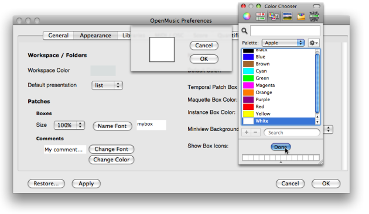

OpenMusic DocumentationHiérarchie de section : OM 6.6 User Manual > The OM Environment > Workspace > Presentation Options
OpenMusic DocumentationHiérarchie de section : OM 6.6 User Manual > The OM Environment > Workspace > Presentation Options
Navigation : page précédente | page suivante
Attention, votre navigateur ne supporte pas le javascript ou celui-ci à été désactivé. Certaines fonctionnalités de ce guide sont restreintes.
Presentation Options
Workspace Preferences
The default workspace colour and presentation mode can be specified via the OM preferences. To access the workspace preferences, go to OM 6.X.X / Preferences, select the Appearance tab and go to the Workspace / Folders section.
Background Colour
To modify the workspace background colour :
choose
Change Colorclick on the coloured frame, select a colour via the colour chooser and choose
Doneto validate your choice, click on
Applyand / orOK.to restore the workspace default appearance, click on
Restore.

{kind=link}
Items Presentation Mode
The items of the workspace window can be displayed either on Icon or List mode, the Icon mode being the default presentation mode.
To change the default presentation mode, select a presentation mode in the Workspace / Folders section.

Items Presentation
Presentation Menu
The presentation mode of items can also modified at a session via the Presentation menu.
Presentation modes are accessed via the main menu, or the contextual menu with a To choose a presentation mode, select |

|
Putting Items in Oder
To sort components by name or type, select the |

|

|
In Icons mode, the workspace can be tidied with the To align components automatically, select |
Items properties
Properties of patches and maquettes can be accessed and modified in the workspace via their Info window.
To open the Info window :
-
Ctrl/ right click on the item and chooseGet Info. - Press
Cmd+i.
The Info window can also display information or comments about the name, type, date of creation and modification of a selected item within the workspace.

Changing the icon
To modify the icon of an item, click on the upper left corner icon of the |

|
For Detailed Information about Resources Management :
Note
In case of problem in localizing or reading a picture or icon, the default icon or the image is attributed to the corresponding items.
Editing the Documentation

|
To edit the documentation, just type the information in the Documentation/Comments prompt. This documentation is then visible as a tooltip when hovering the mouse over the item whith |
Références :
Plan :
- OpenMusic Documentation
- OM 6.6 User Manual
- Introduction
- System Configuration and Installation
- Going Through an OM Session
- The OM Environment
- Environment Windows
- Preferences
- Workspace
- The Workspace Window
- Presentation Options
- Import / Export
- Library
- Tutorials
- Resources
- Visual Programming I
- Visual Programming II
- Basic Tools
- Score Objects
- Maquettes
- Sheet
- MIDI
- Audio
- SDIF
- Lisp Programming
- Errors and Problems
- OpenMusic QuickStart
Navigation : page précédente | page suivante
A propos...(c) Ircam - Centre Pompidou